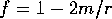
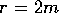
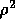

mapfi()
To re-evaluate each of the components of the metric and its inverse
and actually change the stored components the function
mapfi() is used. In its simplest form, mapfi()
takes an indexed object name and re-evaluates in-place each component
of the object. We can apply the new let rule to the metric and
its inverse by
is used. In its simplest form, mapfi()
takes an indexed object name and re-evaluates in-place each component
of the object. We can apply the new let rule to the metric and
its inverse by
#: mapfi(g); g2 #: mapfi(g_inv); g2_invIf the switch showindices is on, the index of each component is displayed during the computation. A side effect of mapfi() is that the multiplier of an object is combined with each of its components, and the multiplier property is reset to 1. The old values of the object are saved, and can be recovered if the user immediately executes the restoreobj() command. Only one object is saved by the system at a time, hence the need to immediately recover. If in doubt, the user can also make a backup by copying the object with the icopy() function (see below).
The mapfi() function is not limited to such simple things as re-evaluating an indexed object in a new environment, it can also be used to apply specific functions to specific portions of the object. The most general format of the call to mapfi() is
mapfi(function(name{index},{args}));
where <function> is some function that operates on algebraic
expressions. The indexed object can either be just a name (so that the
function is applied to the whole object) or an index that isolates
part of the object, or even a fixed index, so that a single element is
affected. mapfi() works by inserting each component of the
indexed object into the input expression and evaluating it. The input
can in fact be any expression but is most often a sub() command
or occasionally a Taylor series function such as ps().
For example, if the user entered a general static spherically symmetric metric, and then wanted to substitute , it could be done in two ways. First, an actual assignment to the variable f could be made, followed by an application of mapfi() similar to that demonstrated above. However, other objects involving f would also be affected if they were involved in indexed assignments, or if mapfi() were applied. To make the substitution into only a single object can be done as follows:
#: mapfi(sub(f=1-2*m/r,g3)); % g3 is a metric defined in terms of f g3If it were necessary to use a series approximation to the metric coefficients about , this could be done via
#: mapfi(ps(g3,r,2*m)); g3
Continuing with the Kerr metric example, we can define the derivatives of the as yet unevaluated symbols rho2 and delta, and compute the Ricci tensor:
#: depend delta,r;
#: depend rho2,r,th;
#: let df(rho2,r) = 2*r;
#: let df(delta,r) = 2*r-2*m;
#: let df(rho2,th) = -2*a^2*sin(th)*cos(th);
#: ricci();
computing g2_ric
computing g2_R
computing g2_c1
christoffel1 finished.
computing g2_c2
christoffel2 finished.
riemann finished.
g2_ric
At this point in the calculation, the Ricci tensor g2_ric will
still appear to have non-zero components, since rho2 and delta remain unevaluated. For other metrics it may be found that it
is better to not evaluate the derivatives, or it may be best to fully
evaluate everything from the start. It is a matter of trying different
possibilities to determine which allows the successful completion of
the calculation. If certain terms remain unevaluated, then sooner or
later they must be given their actual values; the issue is when to do
this so as to balance the growth of expressions. Evaluating too soon
may mean the expressions swell (especially if a sum in a denominator
is formed in the metric inverse), whereas delayed evaluation may mean
that many cancellations have not occurred, and a large amount of work
must now be done to insert the terms. For another example of this sort
of work, see the Sato metric in Appendix B.
It is in all cases, however, best to avoid the occurrence of radicals such as would be formed if the substitution in the Kerr metric were for rather than . Many algebraic systems seem to have difficulties where radicals are concerned, and since the computation of the higher order tensors involves differentiation more radicals will be formed. It is almost always best to make a substitution for the radical since its derivatives can be defined in terms of itself, and this often reduces the complexity of expressions.
The final simplication of the Ricci tensor for the Kerr metric can be done with a single mapfi() command:
#: clear r^2; #: mapfi(sub(delta = r^2+a^2-2*m*r,rho2=r^2+a^2*cos(th)^2,ric)); g2_ricNote that is was necessary to clear the substitution rule for r^2, since otherwise this would result in a circular evaluation for rho2. A package for managing the various let rules and assignments in the system is described in §7.1.
It may be observed that attempting to evaluate the Ricci tensor for this metric when delta and rho2 are given their actual values at the outset results in a Heap space exhausted fatal error on some systems. The value of carefully controlling evaluations is therefore apparent. It is useful to turn on the showindices switch when working with an unfamiliar metric, because a judgement can then be made as to whether the calculations are proceeding at an acceptable rate, and whether a different approach might be more profitable. The switch peek when on acts like showindices, but causes the system to indicate whether a component has evaluated to zero or not. The user can then immediately see if the calculation is proceeding correctly (assuming, as is often the case, that zero is the expected answer).